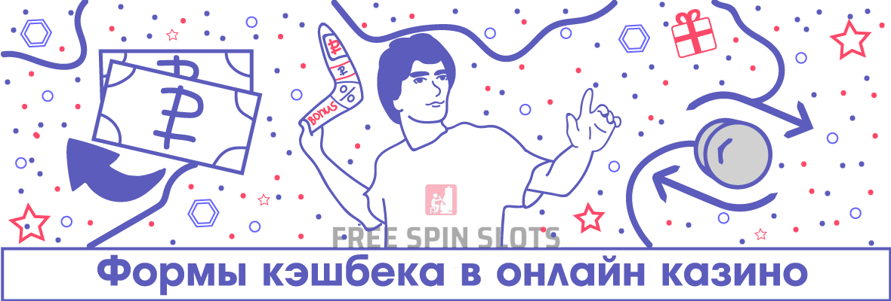
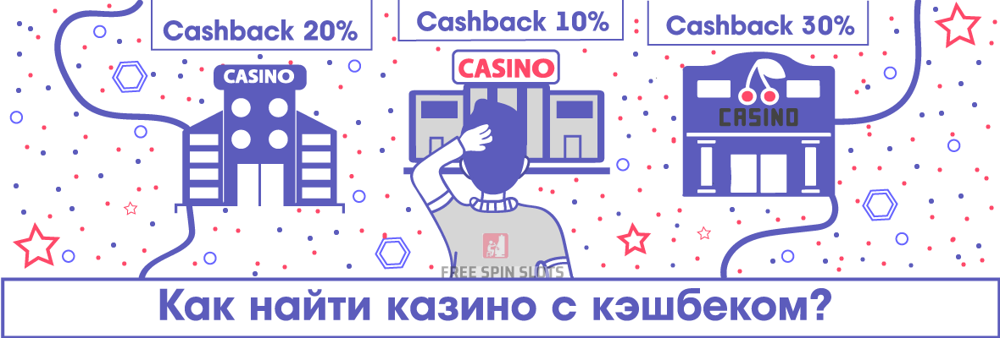

Лучшие кэшбек бонусы в онлайн казино
Никто не любит проигрывать в онлайн казино, но, к сожалению, такое происходит достаточно часто. В наземном заведении вам просто пришлось бы сжать ладони в кулаки и выйти на улицу. Виртуальные же клубы в этом плане имеют неоспоримое преимущество – они могут предоставить своим игрокам кэшбек, то есть вернуть часть денег на их счет. На эти средства можно продолжить свою игру либо вывести их. В нашем обзоре мы максимально подробно разберем этот вид бонуса.
| Казино | Размер | Промокод | Описание | ||
|---|---|---|---|---|---|
| 1 000 - 500 000поинтовбез вейджера | Кэшбек начисляется раз в неделю по пятницам в виде поинтов, после чего обменивается в личном кабинете на реальные средства | Получить | |||
| Кэшбек начисляется раз в неделю по пятницам в виде поинтов, после чего обменивается в личном кабинете на реальные средства | |||||
| От 50 до 30%возвратавейджер: x3 | Ежедневный кэшбек активируется в личном кабинете пользователя, самое главное нет максимального размера по сумме | Получить | |||
| Ежедневный кэшбек активируется в личном кабинете пользователя, самое главное нет максимального размера по сумме | |||||
Формы кэшбека в онлайн казино
Иногда кэшбек называют также «страховкой» ставок, но суть остается прежней. В различных казино возврат может отличаться по двум основным параметрам – периоду предоставления и своей форме. Начнем с временных рамок.
Кэшбек может выдаваться в онлайн казино ежедневно, раз в неделю и ежемесячно. Наиболее распространены первые два варианта. Подсчет производится автоматически, после чего возврат начисляется на баланс игрока. Кэшбек имеет две основные формы – реальные деньги или поинты. С деньгами все понятно – вы получаете часть от проигранной за определенный период суммы. В целом, в ситуации с поинтами все то же самое, только средства надо будет конвертировать из баллов в деньги.

Поговорим про поинты подробнее. Это так называемые «очки лояльности», начисляемые за совершение ставок. Представляют собой некий процент от размера каждой ставки. Обычно они имеют наиболее высокий коэффициент в слотах и скретч-картах. Накопление поинтов может способствовать продвижению по рангам в программе лояльности, и чем выше статус, тем более выгодный курс их обмена на реальные деньги.
Иногда игорные заведения комбинируют у себя оба варианта – предоставляя как кэшбек, так и накопление поинтов. Это создает для игрока наиболее комфортные условия в плане возврата части от проигранных сумм.
Существуют и более редкие варианты выдачи кэшбека. Например, некоторые онлайн казино производят активацию возврата по промокоду, который нужно ввести в специальном меню или просто отправить в чат поддержки. Иногда компенсация проигрышей может носить акционный характер, предоставляясь вне очереди во время каких-либо событий и турниров. Яркий пример – выдача кэшбека по промокоду во время конкурса стримеров.
Формула расчета кэшбека
Обратите внимание, что на кэшбек может рассчитывать только тот игрок, который проиграл определенную сумму. Если вы имеете положительную историю ставок за определенный период (или за все время игры), проще говоря, «находитесь в плюсе», то возврат вам предоставлен не будет.
Нашу формулу нисколько нельзя считать универсальной! Многие казино имеют свои собственные алгоритмы расчета с разного рода коэффициентами и другими переменными. Мы лишь представили наиболее простой базовый расчет. В каждом игорном заведении, где имеется кэшбек, обычно есть специальный раздел в меню или Правилах, где подробно рассказывается про условия предоставления возврата.
Правила кэшбека
Любой бонус в онлайн казино имеет свои условия и правила, это же касается и кэшбека. К последнему относятся следующие основные параметры:
- Период выдачи.
- Процентный размер.
- Максимальная сумма.
- Вейджер.
- Время на отыгрыш.
Период выдачи кэшбека мы уже подробно рассмотрели выше. Он может предоставляться раз в день, неделю или месяц. Расчет обычно осуществляется автоматически, деньги самостоятельно поступают на счет в кэше или поинтах.
Практически всегда имеется ограничение на максимальную сумму кэшбека. Она варьируется от одного казино к другому. Где-то игрок сможет вернуть 5 000 рублей, на другом сайте – 10 000 рублей, в третьем заведении – 30 000 рублей и так далее. А вот минимальная сумма может как лимитироваться, так и нет. То есть, казино либо устанавливает нижний порог проигрыша и, соответственно, кэшбека (например, в 500 рублей), либо не делает этого.
Вейджер является краеугольным камнем любой бонусной системы, в том числе и кэшбека. Впрочем, многие лучшие онлайн казино предоставляют возврат без отыгрыша. То есть, если пользователь получил деньги или поинты по кэшбеку, то он волен делать с ними, что угодно – сразу вывести или попробовать сыграть в любой игре – ограничений, как в случае с обычными бонусами, здесь нет. Если же вейджер на кэшбек имеется, то он обычно совсем небольшой – х1-х3. Вкратце поясним, что такое вейджер. Это оборот по ставкам, распространяющийся на всю сумму кэшбека. Так, если вы получили возврат в 2000 рублей с вейджером х1, то вам надо сделать ставок на те же 2000 рублей, после чего оборот будет завершен, бонус отыгран, и деньги можно вывести.
Очень часто казино устанавливают время на отыгрыш кэшбека, если есть вейджер. Это значит, что вам нужно уложиться в определенный срок, за который надо завершить оборот по ставкам. Этот параметр также разнится от одного игорного заведения к другому – где-то это 3 дня, а в другом месте – 1 год.
Как найти казино с кэшбеком?
В случае, если вы желаете самостоятельно отобрать для себя игорный сайт с кэшбеком, то сделать это достаточно просто. Обычно информация размещается либо в разделе «Бонусы за депозит», либо доступна в Правилах казино. Если нет времени искать эти сведения, то можно обратиться в службу поддержки клуба через онлайн чат или другие каналы связи. Внимательно изучите правила и условия возврата, чтобы учесть все нюансы.

Однако, одной лишь информации о наличии кэшбека на сайте недостаточно. Важно понимать, что онлайн казино должно быть максимально надежным, предоставлять хорошие бонусы без депозита, иметь обширный ассортимент игр, быстро выводить деньги, обладать положительной репутацией среди игроков. Учесть все эти факторы бывает сложно, а иногда – и вовсе невозможно до тех пор, пока не нарвешься на проблемы. Но зачем учиться на своих ошибках, если можно просто послушать совета экспертов?
Наши специалисты составили рейтинг казино с кэшбеком, в который попали только самые качественные игорные ресурсы. В поле внимания наших обозревателей оказались не только условия кэшбека, но и прочие аспекты работы каждого казино, находящегося в ТОП. Мало того, вся эта информация постоянно актуализируется, а рейтинг не является замершей константой – это динамическая шкала, в которой азартные заведения борются за лидерство. Посмотрите на наш список, чтобы выбрать для себя наиболее приемлемый вариант.